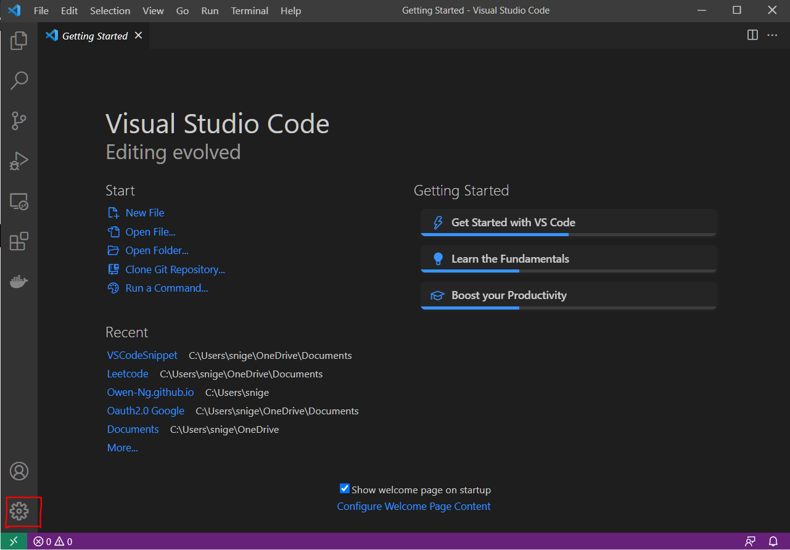
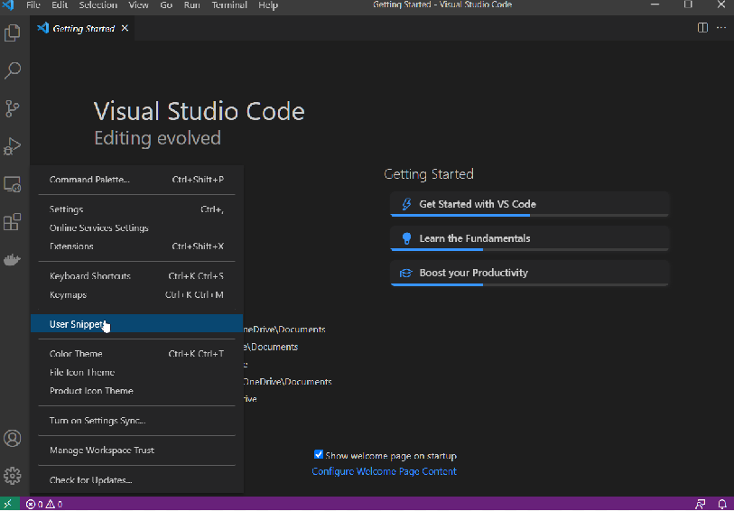
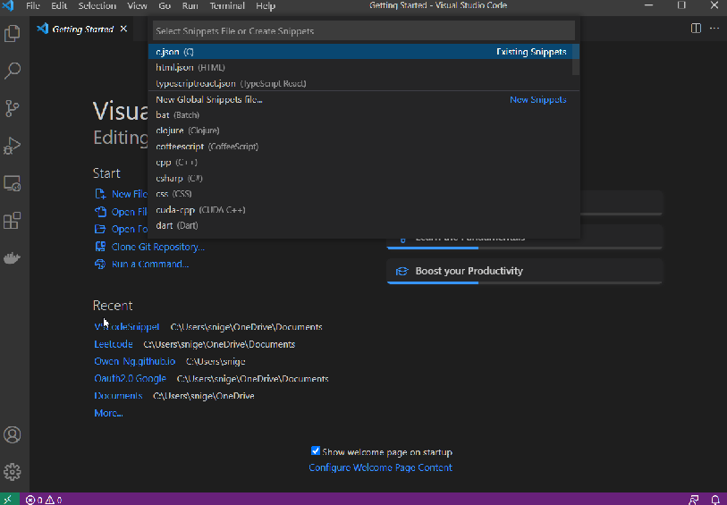
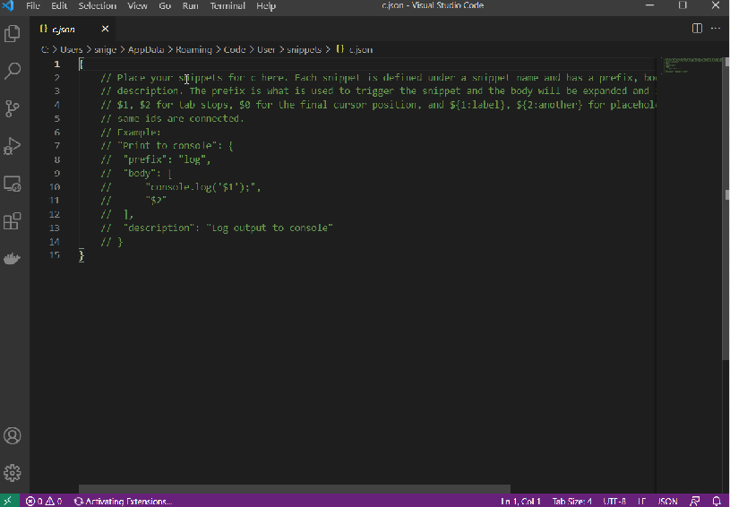

Vs Code Snippet
!
How to add a vscode snippet?
In VsCode, click on the Setting Gear

Click on User Snippet

Choose the language you want to add a code snippet to.

Then Follow the instruction displayed on the file
